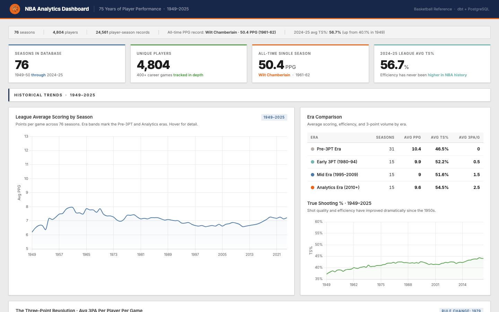

👋 Hey there, I'm
Abdirahman Ali.
Senior Analytics Engineer. I build the infrastructure that turns raw data into decisions.
- ⚡ 5+ years across the full analytics stack
- 🔧 Specializing in dbt, Looker, and warehouse design
🧑💻 About Me
I'm a data professional with 5+ years of experience building analytics infrastructure at tech companies. My work spans the full stack: data modeling in dbt, warehouse design, and the pipelines connecting all of it.
Most of what I build ends up in the hands of non-technical teams. The goal is always the same: make it easy for people to answer their own questions, without filing a ticket and waiting a week.
Away from work, I'm deep in NBA statistics. Deep enough that I built a full data pipeline to analyze 70 years of player data. You can explore it below.
I'm also getting deeper into AI tooling. Looking to take on more projects with Claude Code and explore how it can be used to solve harder, more interesting problems.
🛠️ Projects
NBA Analytics Pipeline
End-to-end data pipeline covering 70+ years of NBA history

Built a transformation pipeline processing NBA player statistics through a medallion architecture (staging, intermediate, marts). Handles multi-team trades and edge cases across every season since 1949. Calculates 15+ advanced metrics including True Shooting %, PER-36, and usage rates to produce analytics-ready datasets for downstream reporting.
💡 Featured insight
50.4 PPG
Wilt Chamberlain's 1961-62 scoring average is the all-time record and it has stood for 63 years. That season he averaged 48.5 minutes per game in a 48-minute game, made possible only because he played through every overtime. No load management in 1962.
✍️ Latest Articles
Mar 2026
LookML Measures Explained: Count, Sum, Average, and Everything In Between
Read →Mar 2026
LookML Dimensions Explained: Types, Labels, Drill Fields, and Links
Read →Jan 2026
LookML Views: The Essential Building Blocks
Read →Jun 2025